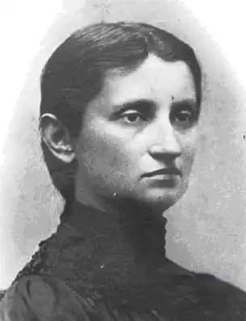

ОЛЬГА КОБИЛЯНСЬКА
(1863 — 1942)
Народилася Ольга Кобилянська 27 листопада 1863р. у містечку Гура-Гумора в Південній Буковині в багатодітній сім'ї дрібного урядовця. З дитячих років вона знала не тільки українську, а й польську та німецьку мови, якими говорили в її родині. Дитинство й юність майбутньої письменниці минули в румунсько-німецьких містечках Гура-Гумора, Сучава, Кімполунг. Пізніше вона жила в с. Димка, а з 1891р. — у Чернівцях. У Південній Буковині, заселеній переважно німцями й румунами, жили й українці. Але українських шкіл чи культурно-освітніх закладів у 60 — 80-ті рр. тут не було. Німецька школа не могла дати Кобилянській будь-яких знань з історії культури українського народу. Перші літературні твори О. Кобилянської, написані німецькою мовою ще без чіткого уявлення, "що значить слово "література", припадають на початок 80-х рр. ("Гортенза, або нарис з життя однієї дівчини", "Доля чи воля?"). Ранні неопубліковані твори Кобилянської ("Гортенза", "Малюнок з народного життя на Буковині", "Видиво", "Людина з народу" та ін.) сьогодні зберігають переважно пізнавальне значення, відображаючи окремі сцени з життя містечкової інтелігенції, людей з народу. Німецька мова, як і німецька культура, відіграли позитивну роль у житті й творчості Кобилянської. Вони, як слушно зауважила Леся Українка, допомогли Кобилянській вийти в широкий світ загальнолюдської культури. Але для утвердження Кобилянської як української письменниці необхідно було глибоко знати не лише українську мову, а й надбання української літератури. Цю істину вона все ясніше почала усвідомлювати і з кінця 80-х років наполегливо вивчає культурну спадщину свого народу, виявляє дедалі більший інтерес до його життя. Тоді ж вона бере активну участь у так званому феміністичному русі, який зачепив чимало наболілих питань, над якими замислювалися представники передової інтелігенції. Ставши у 1894р. однією з ініціаторок створення "Товариства руських жінок на Буковині", Кобилянська обгрунтувала мету цього руху в брошурі "Дещо про ідею жіночого руху". Письменниця порушила питання про тяжке становище жінки "середньої верстви", активно виступила за рівноправність жінки й чоловіка, за її право на гідне людини життя. Ці думки виявилися в ранніх творах письменниці. У деяких з них ("Гортенза", "Вона вийшла заміж" та ін.), змальовуючи духовний світ своїх героїнь, письменниця робить наголос на їх пошуках особистого щастя. В "Людині", а ще більше в "Царівні" особисте щастя героїнь Кобилянської більшою чи меншою мірою вже пов'язується з соціальними проблемами, активною позицією людини в житті, з необхідністю боротися з обставинами, що сковують розвиток її духовних сил. Продовжуючи проблематику "Людини", повість "Царівна" (1895) свідчила про розширення світобачення письменниці, поглиблення її реалістичної манери, засобів психологічного аналізу. Повість має складну творчу історію. Писалась вона і доопрацьовувалась тривалий час (1888 — 1893), первісний текст її був німецький, пізніший — український. Надрукована повість була в газеті "Буковина" (1895) і того ж року вийшла в Чернівцях окремим виданням. Торкнувшись морально-етичних проблем життя інтелігенції у таких новелах, як "Аристократка" (1896), "Impromptu phantasie", Кобилянська продовжує розробляти їх у наступних творах і створює три цілісних образи жінок-інтелігенток в оповіданні "Valse melancolique" (1898). Згодом вона повертається до цієї теми в повістях "Ніоба" (1905), "Через кладку", "За ситуаціями" (1913). Тема інтелігенції проходить через усю творчість Кобилянськоі — від її ранніх оповідань та повістей до "Апостола черні". Зображення життя села, його соціально-психологічних і морально-етичних проблем стало другою провідною лінією творчості Кобилянської. "Щоденники" письменниці переконливо свідчать, що в другій половині 80-х рр. вона вже замислюється над долею народу, пов'язуючи проникнення в його життя з опануванням соціалістичних ідей. В новелі "Жебрачка" (1895) письменниця вперше показує людину з народу, яка опинилася без засобів до існування, живе з милостині. У середині 90-х рр. письменниця поглиблює знання життя селянства, чому сприяють її тісні контакти з мешканцями буковинських сіл, зокрема Димки, що згодом увійде в її творчість страшною трагедією-братовбивством ("Земля"). Глибоко правдиві картини з життя села Кобилянська дала в новелах "Банк ру-стикальний", "На полях", "У св. Івана", "Час", "Некультурна". Визначним досягненням української літератури, вагомим внеском письменниці у розробку теми землі у світовій літературі є повість Кобилянської "Земля". "Факти, що спонукали мене написати "Землю", правдиві. Особи майже всі що до одної також із життя взяті. Я просто фізично терпіла під з'явиськом тих фактів, і коли писала, ох, як хвилями ридала!.." — згадує О. Кобилянська в автобіографічному нарисі "Про себе саму". Саме це дало підстави Франкові назвати "Землю" твором, який, крім художньої цінності, "матиме тривале значення ще й як документ способу мислення нашого народу в час теперішнього тяжкого лихоліття". На початку 900-х рр., розробляючи проблеми, накреслені в ранніх творах, письменниця прагне розширити сферу своїх художніх пошуків, звертається до абстрактно-символічних тем і образів ("Акорди", "Хрест", "Місяць" та ін.), пише ряд поезій в прозі, серед яких є майстерні художні мініатюри. Кобилянська друкує окремі твори в модерністських журналах "Світ", "Українська хата". Реалістичні й романтичні тенденції творчості Кобилянської своєрідно поєднуються в одному з її кращих творів — повісті "В неділю рано зілля копала", в основі якої — мотив романтичної пісні-балади "Ой не ходи, Грицю, та й на вечорниці", що неодноразово опрацьовувався українськими письменниками, зокрема М. Ста-рицьким у драмі під однойменною назвою. Повість перекладена багатьма мовами, інсценізована, з успіхом йде на сценах театрів нашої країни. Творчість Кобилянської 20 — 30-х рр., у період, коли Північна Буковина опинилася під владою боярської Румунії, проходила в особливо складних і тяжких умовах. Українська мова й культура у цьому краї жорстоко переслідувалися, проте й у таких умовах Кобилянська налагоджує контакти з українською літературною молоддю прогресивного журналу "Промінь" (1921 — 1923), з львівським місячником "Нові шляхи", з харківським видавництвом "Рух", де протягом 1927 — 1929рр. вийшли її "Твори" в дев'яти томах. У творах Кобилянської періоду першої світової війни та часів боярсько-румунської окупації Північної Буковини з'явилися деякі нові мотиви. В оповідання письменниці ввійшла тема війни ("Юда", "Лист засудженого вояка до своєї жінки", "Назустріч долі" (1917), "Зійшов з розуму" (1923) та ін.), що була однією з провідних у творчості В. Стефаника, Марка Черемшини, О. Маковея, К. Гриневичевої та ін. У деяких оповіданнях та новелах післявоєнного періоду Кобилянська звернулася до відображення тих морально-етичних проблем, що стали предметом художнього аналізу в багатьох її творах, написаних у кінці XIX — на початку XX ст. Так, мотиви "Землі" знаходять своєрідне продовження і певне поглиблення в соціально-побутовому оповіданні "Вовчиха". Творчість Кобилянської 20 — 30-х рр підпадає під певний вплив символізму ("Сниться", "Пресвятая богородице, помилуй нас!"). У романі "Апостол черні" письменниця певною мірою ідеалізує буковинське духовенство, наділяючи таких духовних пастирів, як о. Захарій, багатьма громадянськими й християнськими чеснотами. Виступивши в середині 90-х рр. як українська письменниця з оповіданнями й повістями з життя інтелігенції, Кобилянська протягом майже півстоліття створила десятки оповідань, нарисів, новел, повістей, критичних і публіцистичних статей, перекладів, лишила значне за обсягом листування. Велика частина її творів написана німецькою мовою. З них лише деякі були надруковані в періодичних виданнях; у 1901р. вони вийшли окремою книжкою під назвою "Kleinrussische Novellen". Окрему ідейно-тематичну групу становлять мемуарні та публіцистичні твори Кобилянської, написані в радянський період її діяльності. Обставинами життя і творчістю Кобилянська глибоко вросла в буковинський грунт. Разом з тим вона ніколи не замикалася у вузьких етнографічних рамках і охоплювала зором усю Україну. Активна учасниця загальноукраїнського літературного процесу, Кобилянська постійно спілкувалася з культурами інших народів, зокрема тих, які жили в Австро-Угорській імперії. Завдяки новаторству, співзвучності прогресивним тенденціям світової літератури проза Кобилянської в її вершинних виявах викликала і викликає значний інтерес не лише в нашій країні, а й за її межами. Кращі твори письменниці вийшли у перекладах багатьма мовами, зокрема слов'янськими, відіграли й відіграють важливу роль у міжслов'янських літературних контактах, піднімаючи міжнародний престиж українського художнього слова.